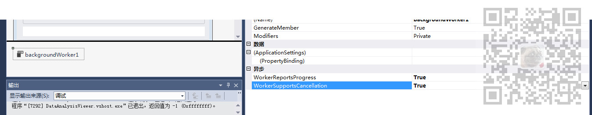
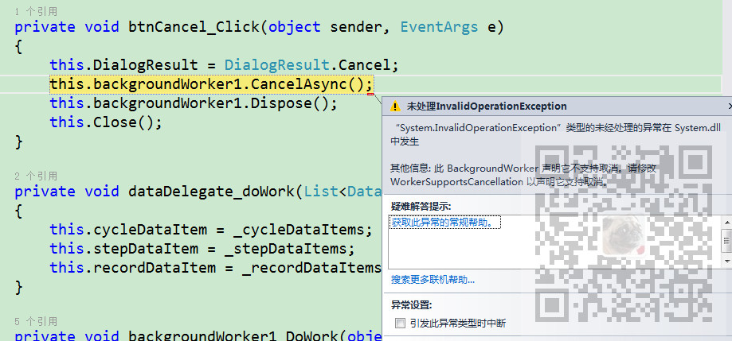

在Winform中拖拽 一个BackgroundWorker控件，配合进度条控件能开启一个后台线程并报告进度条进度。
但是在执行后台线程的任务时，如果想要取消，怎样让其停止执行。
注:
博客主页：
https://blog.csdn.net/badao_liumang_qizhi
关注公众号
霸道的程序猿
获取编程相关电子书、教程推送与免费下载。
将BackgroundWorker控件的WorkerSupportsCancellation属性设置为true。

这里是直接通过控件设置属性的方式，如果是直接声明的对象，则可以通过对象.属性去设置。
如果不设置则会提示：此BackgroundWorker声明它不支持取消。。。

在上面允许取消后，在取消按钮的点击事件中发起取消后台操作的请求。
this.backgroundWorker1.CancelAsync();完整示例代码
private void btnCancel_Click(object sender, EventArgs e)
{
this.backgroundWorker1.CancelAsync();
this.DialogResult = DialogResult.Cancel;
this.Close();
}
上面发起取消后台操作的请求后，并不会真正关闭后台进程，只是报告要取消后台进程。
如果要执行的操作是一个循环则会一直循环完。
在进行后台具体执行的操作时是这样绑定的
this.backgroundWorker1.DoWork += backgroundWorker1_DoWork;
//触发事件
this.backgroundWorker1.RunWorkerAsync();
所以要在具体执行后台操作的方法 backgroundWorker1_DoWork中去进行判断并终止
在上面进行请求取消操作后，那么BackgroundWorker对象的CancellationPending属性就为true。
所以在具体执行后台操作的方法中的循环操作中
BackgroundWorker bgWorker = sender as BackgroundWorker;
if ((bgWorker.CancellationPending == true))
{
e.Cancel = true;
errMsg = "已取消导出";
return false;
}
if (e.Cancel)
{
errMsg = "已取消导出";
return false;
}